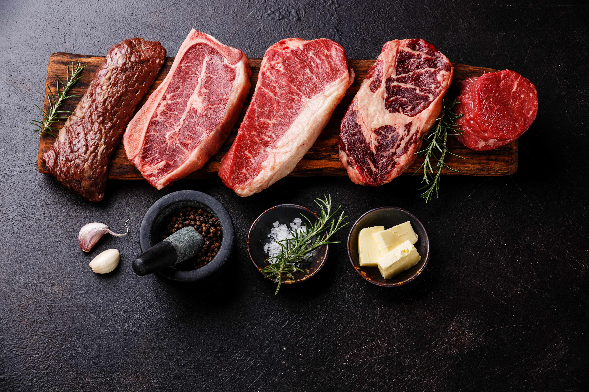
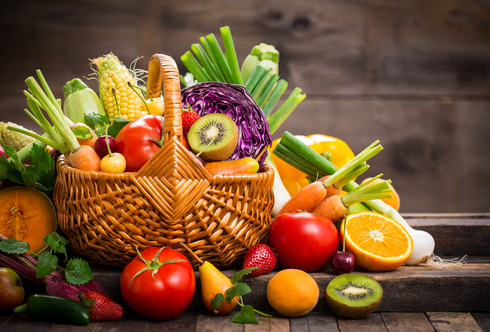
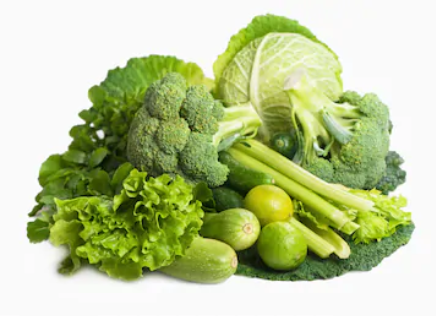
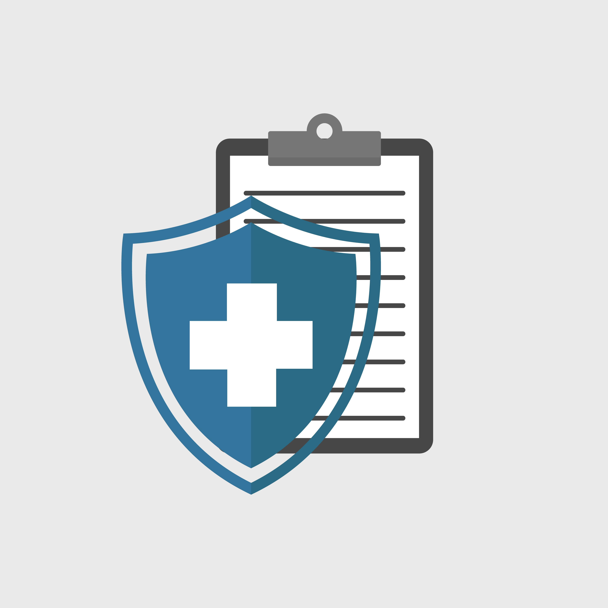

Características del presupuesto personal
¿Cómo se realiza un análisis del costo y beneficio?
Un ejercicio que nos puede ayudar a tener una idea de los gastos que tendremos que realizar durante el mes, consiste en hacer una lista de los productos que compramos con frecuencia cuando vamos al supermercado a comprar la comida y las cosas que necesitamos para la casa. Así, podemos saber con una mayor seguridad cuánto vamos a gastar.
Esta lista está dividida en varias categorías:
| Abarrotes | Artículos de limpieza |
| Carnicería  | Salud |
| Frutas  |
Vivienda

|
| Verduras  | Transporte |
Aseo personal

|
Educación |
| Otros  | Recreación |
Podemos elaborar nuestra propia lista y tenerla a la mano para cuando vayamos de compras.
Con esta lista podemos tener una idea de lo que vamos a gastar en un período de tiempo y así tendremos una mejor planeación.
El propósito de este ejercicio es que nos demos cuenta del dinero que gastamos e identifiquemos lo que podemos dejar de comprar, lo que podemos adquirir más barato para poder ahorrar dinero.